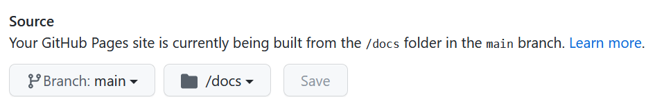

Hosting a blogdown blog on github pages
I have recently moved from building this blog via the distill package to blogdown. The main reason for this is that, at the time of writing, distill does not support full RSS feeds for multiple articles. Deploying the distill based blog via github pages was quite straightforward, but doing so for the blogdown based blog proved to be quite cumbersome.
While there are many good blog posts on deploying blogdown-blogs on github pages, many users tend to run into problems, as this stackoverflow thread with 100+ upvotes shows.
In my case, I needed to do two things for successful deployment of this blog on github pages:
- add a
.nojekyllfile to the main directory of the blog - add a
publishDir: docsstatement belowbaseurlin theconfig.yamlfile. Rebuilding viablogdown::build_site()then creates a docs folder and populates it with html. On github pages, I then needed to make sure that the blog is build based on this docs folder (see the image below). After that, I simply had to commit, push, and github actions would finally deploy the blog without any error messages!

Figure 1: Build the github pages site from the ‘docs’ folder